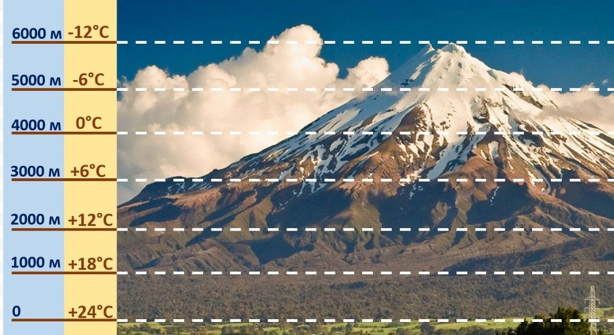

В данном задании потребуется определить удельный вес, относительную влажность воздуха, солёность вод или температуру воздуха.
Для решения этого задания, потребуется взять размер объекта и умножить его на 100% и поделить на общий размер.
Пример: Площадь территории России на 1 января 2024 года составила 17125,2 тыс. кв. км. Центральный Федеральный округ занимает площадь в 650,2 тыс. кв. км. Определите долю (в %) ЦФО в площади страны.Полученный результат округлите до целого числа.
Здесь мы должны 650,2 умножить на 100% и поделить на 17125,2. Ответом будет 3,7, что требуется округлить до целого, т.е до 4.
Для решения этого задания, потребуется взять содержание водяного пара, умножить его на 100% и поделить на максимально возможное содержание водяного пара.
Пример: Температура воздуха равна +15 °С, содержание водяного пара в нём 6,4 г/м3. Какова относительная влажность воздуха, если максимально возможное содержание водяного пара при такой температуре составляет 12,8 г/м3? Полученный результат округлите до целого числа.
Здесь мы должны 6,4 умножить на 100% и поделить на 12,8. Ответом станут 50%.
Для решения этого задания, потребуется перевести промилле в граммы и умножить это на литры.
Пример: Средняя солёность поверхностных вод Средиземного моря составляет 38‰. Определите, сколько граммов солей растворено в 3 л его воды. Ответ запишите в виде числа.
Здесь мы должны 38‰ перевести в граммы, что будет равно 38г. Дальше следует 38 умножить на 3. Ответом станет 114.

Для решения этого задания, потребуется абсолютную высоту горы поделить на размер участка(расстояние между повышением или понижением температуры), умножить результат на изменение температуры(разница температур между повышением или понижением температуры), и в конце нужно вычесть из температуры у подножия результат последнего действия.
Пример: При подъёме в тропосфере температура воздуха понижается в среднем на 0,6 °С через каждые 100 м. Определите температуру на вершине горы А с абсолютной высотой 8000 м, если у её подножия, расположенного на уровне моря, температура составляет 30 °С. Ответ запишите в виде числа.
Здесь мы должны 8000 поделить на 100, умножить на 0,6 и вычесть результат из 30. Ответом станет -18.
